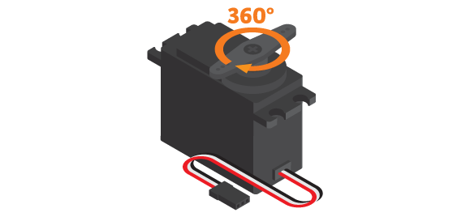
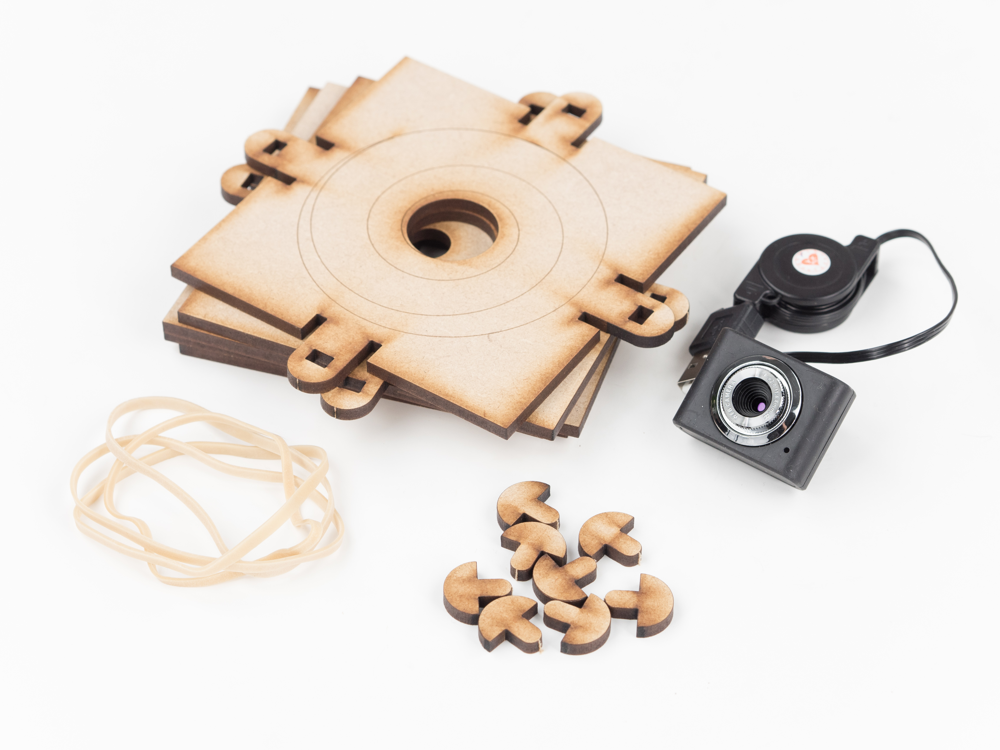
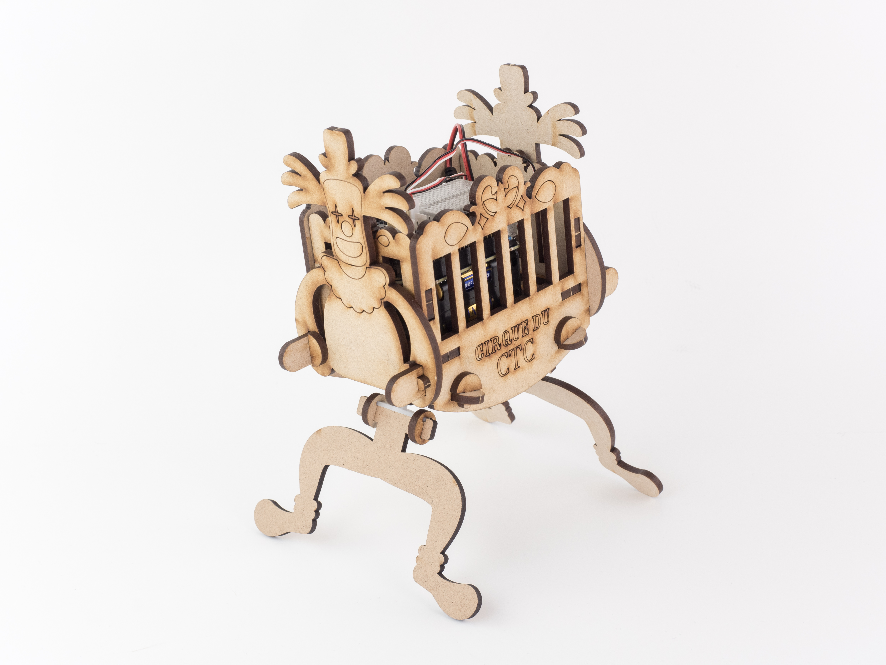
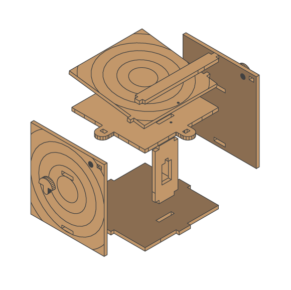
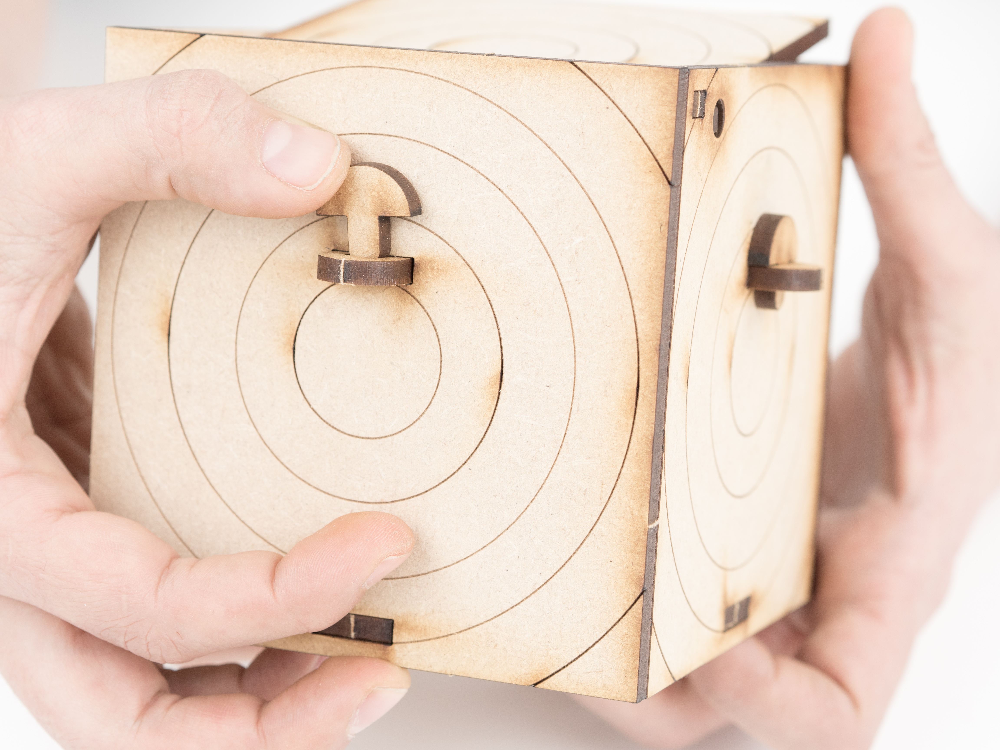
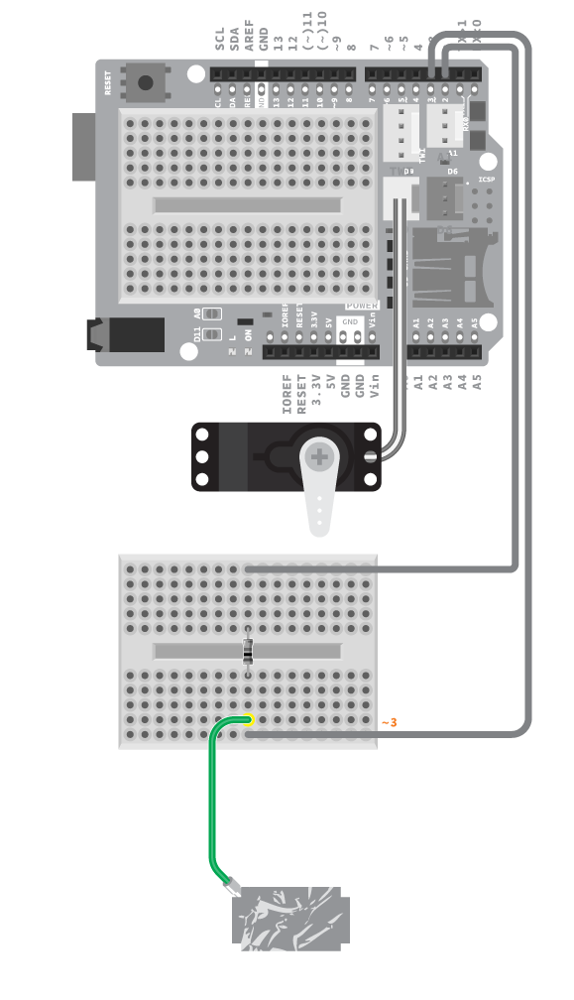

https://ctc101.arduino.cc/ctc101/module/module-4
Aprende sobre como controlar motores y sensores. Construye diferentes robots y agrega movimiento usando servo motores standard y continuos.
https://ctc101.arduino.cc/ctc101/module/module-4
Aprende sobre como controlar motores y sensores. Construye diferentes robots y agrega movimiento usando servo motores standard y continuos.
Para controlar los motores, utilizarás la placa controladora. Básicamente, cualquier objeto electrónico que hayas visto o conoces, tiene alguna pieza en movimiento. Por ejemplo: impresoras, coches de juguete, cepillos de dientes eléctricos, etc.; todos, contienen motores. Los hay de muchos tipos, pero principalmente encontrarás tres tipos de motores:
Motores DC (corriente continua):
Si necesitas que algo gire pero sin precisión, este es tu motor. Para encontrar un motor DC en la vida real, busca el ventilador que está dentro de tu ordenador. También hay uno muy pequeño en tu teléfono móvil. El motor DC es el que hace que tu teléfono vibre, haciendo girar un bloque de metal cuyo peso está distribuido de manera no uniforme.
Un motor DC puede funcionar libremente en ambas direcciones, es muy fácil controlar su velocidad pero no su posición. Tampoco es sencillo hacerlo parar de forma precisa. Viene con dos cables: alimentación y tierra. Por regla general un motor DC no puede ser alimentado directamente de la corriente proporcionada por un pin digital de tu placa.
Los cables se pueden conectar a tierra o a un pin digital. Para hacerlo girar, pon el pin digital a nivel alto (HIGH) y para que se detenga, pon el pin digital a nivel bajo (LOW). Para hacerlo girar en sentido contrario, cambia el orden de los cables.
Es posible controlar la velocidad de un motor DC desde tu placa con una técnica llamada PWM usando un transistor. Con varios transistores dispuestos en un puente H, puedes incluso controlar la dirección sin tener que desconectar el motor.
Motores paso a paso:
Los motores paso a paso se pueden encontrar en cualquier objeto electrónico donde prima la precisión, como un escáner o una impresora. Un motor paso a paso puede, a diferencia del motor DC, ser muy preciso tanto en posición como en velocidad.

La rotación completa de los motores paso a paso se divide en pasos equitativos y puedes controlar la parada del motor en cada uno de estos pasos. Los pasos se miden en grados, normalmente 1.8, 3.6 o 7.2. Cuanto más pequeños sean los pasos, más preciso será. Esto hace que sea muy útil cuando se necesita un posicionamiento repetido.
Sin embargo, el motor paso a paso nunca será muy rápido. Un motor paso a paso tiene 4 o más cables. Por lo general, necesitas más de 5 voltios para alimentar un motor paso a paso, lo que significa que no se puede alimentar directamente desde la placa controladora. Sin embargo, podemos utilizar una fuente de alimentación externa para alimentar el motor y controlarlo desde la placa a través de un transistor.
Servomotores
Los servomotores son ampliamente utilizados en robótica y en radio-control. Estos tipos de motores son los que vas a utilizar aquí puesto que son muy sencillos de conectar y controlar desde tu placa.
Tienen tres cables: uno para la energía, uno para tierra y otro para controlarlos. Hay dos tipos de servomotores: rotación estándar y rotación continua. El estándar puede girar 180 grados y puede ser controlado como el motor paso a paso a una posición precisa. El de rotación continua puede, al igual que el motor DC, rotar en ambas direcciones, no tan rápido; pero puedes controlar tanto la velocidad como la dirección sin tener que utilizar transistores.
Comencemos por comprobar cómo funciona el servomotor estándar. Para controlar un servo vamos a utilizar una librería llamada Servo. Como vimos en el Módulo 2, una librería es un fragmento de código que ya ha sido escrito y que se puede instanciar (llamar) cada vez que necesites utilizarlo.
Ejemplo 4.1
En este ejemplo vas a controlar el servo para mover su eje entre 0 y 180 grados repetidamente.
MATERIALES
1 x placa controladora
1 x Arduino Education Shield
1 x servo estándar
INSTRUCCIONES
Conecta la shield en la parte superior de tu placa controladora.
Monta uno de los accesorios del servo en el servo estándar.
Conecta el cable del servo al conector D6 de la shield.
Escribe el siguiente programa en el IDE:
/*
* _4.1_standard_servo
*
* The board will control the servo to repeatedly move its arm between 0 and 180 degrees.
*
* (c) 2013-2016 Arduino LLC.
*/
#include <servo.h>
Servo myservo;
void setup() {
myservo.attach(6);
}
void loop() {
myservo.write(0);
delay(1000);
myservo.write(180);
delay(1000);
}Compila y descarga el programa en la placa.
RESULTADO
El eje del servo debe girar a 0 grados, esperar un segundo, girar a 180 grados, esperar un segundo y repetir de nuevo esta secuencia.
COMANDOS
#include servo.h: Incluye la librería Servo, esta librería se emplea para controlar servos.
Servo servoName: Crea el objeto servoName de la clase Servo. Este es el que utilizas para controlar el servo.
servoName.attach( pinNumber ): Aquí es donde indicas a que pin pinNumber conectas el servo servoName.
servoName.write( degrees ): Indica al servo a qué posición girar, este valor se especifica en grados (degrees) y puede variar entre 0 y 180
CÓMO FUNCIONA
Se incluye la librería Servo.
Se crea el objeto myservo de la clase Servo.
En la función setup(), myservo se configura en el pin 6.
En la función loop(), el eje del servo se mueve a 0 grados.
El programa espera durante 1000 milisegundos.
El eje del servo se mueve a 180 grados.
El programa espera durante otros 1000 milisegundos.
Repite la función loop().
¡Sigue experimentando!
Para saber más, haz click en la referencia servo estándar.
Cambia el ángulo del servo cambiando el valor dentro de la función write. Prueba añadir más movimientos en el programa. Observa qué sucede si cambias el tiempo de retardo.
En lugar de hacer que el servo salte directamente de una posición a otra, puedes aumentar o disminuir la posición poco a poco. Intenta escribir un programa que haga que el servo haga un barrido de un lado a otro, de una manera suave. (SUGERENCIA: mira el ejemplo Archivo -> Ejemplos -> Servo -> Sweep)
Ahora vamos a probar el servo de giro continuo. Puedes controlar el servo continuo configurando su velocidad y dirección de giro en lugar de su posición.

Ejemplo 4.2
En este ejemplo, vas a emplear el mismo programa que en el ejemplo anterior, pero esta vez con un servo de giro continuo.
MATERIALES
1 x placa controladora
1 x Arduino Education Shield
1 x servo de giro continuo
1 x porta pilas de 4
4 x pila AA
1 x conector de alimentación (con dos cables sueltos)
4 x cable de prototipado
INSTRUCCIONES
Conecta la shield en la parte superior de tu placa controladora.
Monta uno de los accesorios del servo en el servo de giro continuo.
Conecta los cables rojo y negro de la batería a la breadboard.
Conecta el cable negro de la batería a GND a través de la breadboard empleando un cable de prototipado.
Conecta tres cables de prototipado al conector del servo.
Conecta el cable rojo del servo al cable rojo o positivo de la batería a través de la breadboard.
Conecta el cable negro del servo a GND a través de la breadboard.
Conecta el cable blanco del servo (verde en la ilustración) al pin digital 6.
Escribe el siguiente programa en el IDE:
/*
* _4.2_continuous_servo
*
* The board will control the continuous rotation servo by writing a speed to it instead of a position.
*
* (c) 2013-2016 Arduino LLC.
*/
#include <servo.h>
Servo myservo;
void setup() {
myservo.attach(6);
}
void loop() {
myservo.write(0);
delay(1000);
myservo.write(180);
delay(1000);
}Compila y descarga el programa en la placa.
RESULTADO
Lo que hace el programa es mover el servo hacia una dirección a toda velocidad durante un segundo. A continuación, gira en dirección opuesta a toda velocidad durante otro segundo, repitiendo esto constantemente. Este es exactamente el mismo programa que usamos para controlar el servo estándar pero como puedes ver, el servo continuo actúa diferente. Esto se debe a que controlas su velocidad en lugar de su posición.
COMANDOS
servoName.write( speed ): Indica al servo a qué velocidad girar. speed puede ser un número de 0 a 180, donde 0 es la velocidad máxima en una dirección y 180 la velocidad máxima pero en la dirección opuesta.
CÓMO FUNCIONA
Se incluye la librería Servo.
Se crea el objeto myservo de la clase Servo.
En la función setup(), myservo se configura en el pin 6.
En la función loop(), el eje del servo gira continuamente a velocidad 0, la velocidad máxima en un sentido.
El programa espera durante 1000 milisegundos.
El eje del servo gira continuamente a velocidad 180, la velocidad máxima en el otro sentido.
El programa espera durante otros 1000 milisegundos.
Repite la función loop().
¡Sigue experimentando!
Para saber más, haz click en la referencia servo de giro continuo.
Ahora, ¿qué ocurre si cambias los valores dentro de la función write()?
¿Qué valor hace que el servo se quede parado?
Puedes emplear cualquier tipo de entrada para controlar servos.
Ejemplo 4.3
En este ejemplo, utilizarás un potenciómetro para controlar la de posición de un servo estándar.
MATERIALES
1 x placa controladora
1 x Arduino Education Shield
1 x potenciómetro
1 x servo estándar
3 x cable de prototipado
INSTRUCCIONES
Conecta la shield en la parte superior de tu placa controladora.
Conecta el potenciómetro a la breadboard.
Conecta el pin central del potenciómetro al pin analógico A5, y los extremos a GND y alimentación.
Conecta el cable del servo al conector D6 de la shield.
Escribe el siguiente programa en el IDE:
/*
* _4.3_input_controlled_servo
*
* The board will use a potentiometer to control the position of a standard servo.
*
* (c) 2013-2016 Arduino LLC.
*/
#include <servo.h>
Servo myservo;
int potPin = A5;
int val;
void setup() {
myservo.attach(6);
}
void loop() {
val = analogRead(potPin);
val = map(val, 0, 1023, 0, 179);
myservo.write(val);
delay(15);
}Compila y descarga el programa en la placa.
RESULTADO
Girando el mando del potenciómetro, se puede controlar la posición del eje de salida del servo. Girado al máximo en una dirección, el servo debe ir a 0 grados. Girado al máximo en la otra dirección, el servo debe ir a 180 grados.
CÓMO FUNCIONA
Se incluye la librería Servo.
Se crea el objeto myservo de la clase Servo.
Se declaran las variables potPin y val.
En la función setup(), myservo se configura en el pin 6.
En la función loop(), se lee el valor analógico en el pin A5 y se almacena en la variable val.
El valor de la variable val se mapea de 0 - 1023 a 0 - 179 y se almacena de nuevo en val.
La variable val se emplea para establecer la posición del eje de salida del servo.
El programa espera durante 15 milisegundos para que al servo le de tiempo a llegar a la posición.
Se repite la función loop().
¡Sigue experimentando!
Cambia el servo estándar por uno de giro continuo. Utiliza el mismo código pero suprime la función delay, cárgalo y vuelve a probarlo. ¿Cómo actúan los diferentes servos y por qué? Piensa por qué la función delay es necesaria cuando se controla el servo estándar pero no lo es con el continuo.
¿Qué otros componentes puedes utilizar para controlar los servos y qué puedes añadirles para que sean más útiles?
Cuando utilices dos servos a la vez, tu placa puede tener un problema para darles la suficiente corriente. Hay diferentes técnicas para controlar esto. Aquí vas a explorar la técnica de escribir señales a los servos por separado. Este control lo harás desde tu programa. Mira la referencia ruedas para aprender cómo usar los servos para controlar ruedas.
Ejemplo 4.4
En este ejemplo controlarás dos servos sin moverlos a la vez para asegurar que la placa puede proporcionar suficiente corriente.
MATERIALES
1 x placa controladora
1 x Arduino Education Shield
2 x servo estándar
INSTRUCCIONES
Conecta la shield en la parte superior de tu placa controladora.
Conecta un servo estándar a D6 y el otro a D9.
Escribe el siguiente programa en el IDE:
/*
* _4.4_two_servos
*
* The board will ccontrol two servos, moving one at a time to make sure that the can provide enough current.
*
* (c) 2013-2016 Arduino LLC.
*/
#include <servo.h>
Servo myservo1, myservo2;
void setup() {
myservo1.attach(6);
myservo2.attach(9);
}
void loop() {
myservo2.detach();
myservo1.attach(6);
myservo1.write(70);
delay(1000);
myservo1.write(120);
delay(1000);
myservo1.detach();
myservo2.attach(9);
myservo2.write(70);
delay(1000);
myservo2.write(120);
delay(1000);
}Compila y descarga el programa en la placa.
RESULTADO
Uno de los servos gira a una posición de 70 grados, espera un segundo, y a continuación gira a una posición de 120 grados. El segundo servo hará lo mismo que el primero. Esta secuencia se repite continuamente.
CÓMO FUNCIONA
Se incluye la librería Servo.
Se crean los objetos myservo1 y myservo2 de la clase Servo.
En la función setup(), myservo1 se configura en el pin 6 y myservo2 se configura en el pin 9.
En la función loop(), myservo2 se desactiva y myservo1 se activa en el pin 6.
myservo1 gira a la posición 70 grados.
El programa espera durante 1000 milisegundos.
myservo1 gira a la posición 120 grados.
El programa espera durante 1000 milisegundos.
myservo1 se desactiva y myservo2 se activa en el pin 9.
myservo2 gira a la posición 70 grados.
El programa espera durante 1000 milisegundos.
myservo2 gira a la posición 120 grados.
El programa espera durante 1000 milisegundos.
Se repite la función loop().
¡Sigue experimentando!
Inventa un robot que use un motor de giro continuo y otro de giro estándar para que se mueva hacia adelante, ¿cómo lo harías?
¡Espía a tu gato con esta cámara robótica! Monta la cámara espía y contrólala con un pequeño joystick. Podrás ver todo desde el ordenador y cuando veas algo sospechoso, ¡hazle una foto!
Materiales
1 x placa controladora
1 x Arduino Education Shield
1 x cámara
1 x módulo joystick
2 x servo estándar
2 x cable de módulo
3 x cable de prototipado
8 x pila AA
1 x porta pilas de 4
1 x conector de alimentación con jack
1 x kit cámara robótica
Otros materiales: - 3-4 x goma elástica
Este experimento puede ser adaptado para hacerse sin la Arduino Education Shield. El diseño y el esquemático se pueden descargar aquí y archivos de corte por láser PDF, AI
. Los archivos de Fritzing originales se pueden encontrar en el repositorio de GitHub aquí.
Instrucciones
Conecta la shield en la parte superior de tu placa controladora.
Prepara el módulo joystick y un cable de módulo. A continuación, conecta el cable al joystick.
Comprueba que tu circuito es correcto y conecta la placa al ordenador.
Encuentra el programa CameraRobot y ábrelo.

Descarga el programa en la placa. Retira el cable USB, no lo necesitarás para hacer funcionar este proyecto.
Prepara todos los materiales de construcción de la cámara robótica.
Prueba que las 4 piezas redondas tocan la superficie de la mesa y prepara un servo estándar.
Pon el servo sobre la base de la cámara robótica dejando el cable hacia arriba.
¡Vamos a calibrar el servo! 1.Toma el brazo del servo y ponlo sobre el servo 2.Una vez fijo, vamos a mover manualmente el servo. 3.Gíralo hasta que haga tope. 4.Retira el brazo del servo. 5.Sin mover el servo, vuelve a colocar el brazo perpendicular con el cuerpo del servo. 6.¡Hecho!
Ahora que el servo está calibrado, pon el tornillo y contínua construyendo la cámara.
Prepara tu cámara.

Saca el cable USB de la cámara por el agujero trasero de la caja.
Prepara otro servo estándar.
¡Vamos a calibrar el servo! 1.Toma el brazo del servo y ponlo sobre el servo 2.Una vez fijo, vamos a mover manualmente el servo. 3.Gíralo hasta que haga tope. 4.Retira el brazo del servo. 5.Sin mover el servo, vuelve a colocar el brazo perpendicular con el cuerpo del servo. 6.¡Hecho!
Sin quitar el brazo del servo, alinea el mismo con el servo moviéndolo suavemente.
Ahora que el servo está calibrado, pon el tornillo.
Coloca el servo en la caja dejando el cable en su interior.
Sube el cable del servo inferior y mételo detro de la caja por el agujero.
Pon tu circuito dentro de la caja. A continuación, conecta el servo inferior (pan) al conector D6 de la shield.
Conecta el servo lateral (tilt) al conector D9 de la shield.
Prepara una batería de 12 V y métela en la caja. Para aprender cómo preparar la batería, consulta la referencia Baterías.
Conecta la batería de 12 V al conector de alimentación de la placa.
Saca el joystick fuera de la caja para poder controlar la cámara. Debido al tamaño, quizás necesitás retirar los cables por un momento, sacar el joystick y volverlos a poner en el mismo orden.
Pon la tapa.
Asegúrate de que la placa está conectada al ordenador. Puedes emplear el joystick para apuntar con la cámara.
En el IDE, haz clic en Programa > Mostrar carpeta del programa. Abre las carpetas Processing > CameraRobot, a continuación abre el archivo CameraRobot.pde.
Ejecuta el programa CameraRobot.pde.
¡Qué empiece el espionaje!
Código
Encuentra el programa en: Archivo>Ejemplos>EducationShield>Module4-Robots>Projects>CameraRobot
/*
* CameraRobot
*
* Spy on your cat with this robot camera. Mount the camera robot and
* control it with a small joystick. You can run everything from the
* computer and when you see your cat doing something suspicious,
* take a picture!
*
* You need to run the processing sketch included in the sketch folder
* to be able to take photos with a webcam connected to your computer.
*
* (c) 2013-2016 Arduino LLC.
*/
#include
//The joystick uses two analog pins. Here pin A0 and A1
Joystick joystick = Joystick(A1,A0);//Joystick(XanalogPin, YanalogPin)
Servo pan, tilt;
int panAngle = 90; //Pan angle starts in the middle position
int tiltAngle = 90; //Tilt angle starts in the middle position
int panJoystick = 0;
int tiltJoystick = 0;
void setup(){
//servos are initialized
pan.attach(6);
tilt.attach(9);
}
void loop(){
panJoystick = joystick.getX(); //Get X value from joystick
tiltJoystick = joystick.getY(); //Get Y value from joystick
//If the joysticks X value isn't 0 we will pan
if(panJoystick!=0){
//If the X value from the joystick equals 1 and
//panAngle is less than 180 degrees, increase panAngle with 1
if(panJoystick==1 && panAngle0) panAngle--;
}
//If the joysYicks Y value is 0 we will tilt
if(tiltJoystick!=0){
//If the Y value from the joystick equals 1 and
//tiltAngle is less than 180 degrees, increase tiltAngle with 1
if(tiltJoystick==1 && tiltAngle0) tiltAngle--;
}
pan.write(panAngle); //Set position of the pan servo
tilt.write(tiltAngle); //Set position of the tilt servo
delay(5);
} Encuentra el programa que necesitas ejecutar en Processing para que la cámara web capture las imágenes en: Archivo>Ejemplos>EducationShield>Module4-Robots>Projects>CameraRobot>Processing>CameraRobot
/**
* Camera Robot
*
* This program initializes a webcam connected to a PC.
* If a "P" is pressed it will then take a picture with
* the webcam and store it locally in the sketch folder.
*
* Based on Cookie Monster by David Cuartielles
* (c) 2013-2016 Arduino LLC.
*/
import processing.video.*;
Capture cam;
void setup() {
size(640, 480, P2D);
initializeCamera(0);
}
void draw() {
if (cam.available() == true) {
cam.read();
}
image(cam, 0, 0);
String timeStamp=createTimeStamp();
text(timeStamp, 10, height-10);
// for the keyboard detection to work, you need to have
// clicked on the application window first (aka focus)
if(keyPressed) {
if (key == 'p' || key == 'P') {
captureImage(timeStamp);
}
}
}
void initializeCamera(int camNum){
String[] cameras = Capture.list();
if (cameras.length == 0) {
println("There are no cameras available for capture.");
exit();
} else {
println("Available cameras:");
for (int i = 0; i < cameras.length; i++) {
println("["+i+"] "+cameras[i]);
}
// The camera can be initialized directly using an element
// from the array returned by list():
cam = new Capture(this, cameras[camNum]);
cam.start();
}
}
String createTimeStamp(){
String timeStamp = String.format("%02d", hour());
timeStamp += ":" + String.format("%02d", minute());
timeStamp += ":" + String.format("%02d", second());
timeStamp += " " + year();
timeStamp += "/" + String.format("%02d", month());
timeStamp += "/" + String.format("%02d", day());
return timeStamp;
}
void captureImage(String timeStamp){
saveFrame("pic-######.png");
println("capturing Frame at: " + timeStamp);
}Nota: Para añadir una librería en Processing tienes que ir a : Sketch > Importar biblioteca y pulsar en la opción Añadir Biblioteca. Esta opción abrirá la ventana de "Contribution Manager", donde podrás encontrar las librerías que necesites. Para encontrar la librería de Vídeo, escribe "Video GS" en el campo de texto , selecciona la librería nombrada "Video GStreamer-based video library for Processing", y pulsa el botón de instalar. A continuación, cierra la ventana de "Contribution Manager" y listo, ya la tienes instalada!
CÓMO FUNCIONA
Se incluye la librería EducationShield.
Se declara el objeto joystick de la clase Joystsick.
Se declaran los objetos pan y tilt de la clase Servo.
Se declaran las variables para fijar las posiciones de ambos servos, panAngle y tiltAngle.
Se declaran las variables para almacenar los valores del joystick, panJoystick y tiltJoystick.
En la función setup(), se configuran los objetos Servo.
En la función loop(), se lee el valor X del joystick y se almacena en la variable panJoystick.
Se lee el valor Y del joystick y se almacena en la variable tiltJoystick.
Si la variable panJoystick es distinta de 0, entonces, el joystick se ha movido en el eje x y ocurre lo siguiente.Si la variable panJoystick vale 1 y la variable panAngle es menor que 180, se incrementa panAngle en una unidad.
Si de lo contrario, la variable panJoystick vale -1 y la variable panAngle es mayor que 0, se decrementa panAngle en una unidad.
La siguiente sentencia if comprueba si la variable tiltJoystick es distinta de 0. Si la condición es cierta, ocurre lo siguiente.Si la variable tiltJoystick vale 1 y la variable tiltAngle es menor que 180, se incrementa tiltAngle en una unidad.
Si de lo contrario, la variable tiltJoystick vale -1 y la variable tiltAngle es mayor que 0, se decrementa tiltAngle en una unidad.
La posición del servo que controla el giro (pan en inglés) se fija con panAngle.
La posición del servo que controla la inclinación (tilt en inglés) se fija con tiltAngle.
El programa espera durante 5 milisegundos para que los servos puedan llegar a la posición.
Se repite la función loop().
¿No funciona?
Revisa las ilustraciones y comprueba de nuevo tus conexiones. Asegúrate de que la shield y los cables están conectados firmemente (si dispones de un multímetro, haz click aquí para ver su funcionamiento).
Asegúrate de que has conectado los servos correctamente. Mira la referencia servo estándar para asegurarte de que los servos funcionan.
Asegúrate de que el joystick esté conectado correctamente. Mira la referencia joystick para asegurarte de que funciona.
¡Sigue experimentando!
¿Se están moviendo los servos demasiado lento o demasiado rápido? Intenta cambiar el tiempo en la función delay al final de loop o intenta cambiar el aumento y la disminución de los ángulos.
¿Los servos se mueven demasiado a los lados, o demasiado hacia arriba y abajo? Intenta limitar los ángulos permitidos.
Construye algo diferente con la misma estructura de giro e inclinación que puedas controlar con el joystick.
Este pequeño robot puede gatear. Es todo lo que puede hacer, y tampoco es muy bueno en eso, pero es muy bonito y divertido.
Materiales
1 x placa controladora
1 x Arduino Education Shield
2 x servo estándar
8 x pila AA
1 x porta pilas de 8
1 x conector de alimentación con jack
1 x kit robot gateador
Este experimento puede ser adaptado para hacerse sin la Arduino Education Shield. El diseño y el esquemático se pueden descargar aquí y archivos de corte por láser PDF_A, AI_A, PDF_B, AI_B.
Los archivos de Fritzing originales se pueden encontrar en el repositorio de GitHub aquí.
Instrucciones
Prepara todos los materiales de construcción del robot gateador y ¡Empieza a contruir!
¡Vamos a calibrar los servos! 1.Toma el brazo del servo y ponlo sobre el servo 2.Una vez fijo, vamos a mover manualmente el servo. 3.Gíralo hasta que haga tope. 4.Retira el brazo del servo. 5.Sin mover el servo, vuelve a colocar el brazo perpendicular con el cuerpo del servo. 6.Haz esto en ambos servos.
Ahora que los servos están calibrados, pon el tornillo.
Una vez fijadas las piernas, alinea el brazo del servo con el servo moviéndolo suavemente.
Conecta la shield en la parte superior de tu placa controladora.
Conecta los servos a D9 y D6 en la shield.
Comprueba que tu circuito es correcto y conecta la placa al ordenador.
Encuentra el programa CrawlingRobot y ábrelo.
Descarga el programa en la placa. Retira el cable USB, no lo necesitarás para hacer funcionar este proyecto.
Prepara una batería de 12 V con conector de alimentación y ponla dentro del robot. Para aprender cómo preparar la batería, consulta la referencia Baterías.
Conecta la batería al conector de alimentación de la placa. Y pon la placa en el robot.
¡Es hora de gatear!

CÓDIGO
Encuentra el programa en: Archivo>Ejemplos>EducationShield>Module4-Robots>Projects>CrawlingRobot
/*
* CrawlingRobot
*
* This small robot can crawl. It’s all it can do, and it isn’t
* very good at it. But it is super cute and great fun.
*
* (c) 2013-2016 Arduino LLC.
*/
#include
Servo front, back;
void setup(){
//servos are initialized
front.attach(6);
back.attach(9);
}
void loop(){
//Make the robot crawl by setting the servos to opposite angles.
//90 is the middle angle
//First step of each pair of legs
front.write(110);
delay(200);
back.write(70);
delay(200);
//Second step of each pair of legs
front.write(70);
delay(200);
back.write(110);
delay(200);
}
CÓMO FUNCIONA
Se incluye la librería EducationShield.
Se declaran los objetos front y back de la clase Servo.
En la función setup(), se configuran los objetos Servo.
La posición del servo frontal se ajusta a 110 grados.
El programa espera durante 200 milisegundos.
La posición del servo trasero se ajusta a 70 grados. Es decir, el ángulo opuesto a la parte frontal.
El programa espera durante 200 milisegundos.
La posición del servo frontal se ajusta a 70 grados.
El programa espera durante 200 milisegundos.
La posición del servo trasero se ajusta a 110 grados.
El programa espera durante 200 milisegundos.
Repite la función loop().
¿No funciona?
Revisa las ilustraciones y comprueba de nuevo tus conexiones. Asegúrate de que la shield y los cables están conectados firmemente (si dispones de un multímetro, haz click aquí para ver su funcionamiento).
¿No están funcionando los servos? ¿Funcionan cuando la placa está conectada al ordenador pero no al utilizar la pila? Si es así, intenta cambiar la pila.
¿Sigue sin funcionar? Asegúrate de que has conectado los servos correctamente. Mira la referencia servo estándar para comprobarlo.
¿No se mueve correctamente? Revisa del paso 27 al 37 y asegúrate de que los brazos de los servos están alineados.
¡Sigue experimentando!
¿Quieres que el robot de pasos más grandes o más pequeños? Intenta cambiar los ángulos.
¿Quieres que el robot gatee más rápido o más lento? Intenta cambiar el tiempo de espera en la función delay.
Prueba a ver de cuántas maneras diferentes puedes hacer que el robot se arrastre y cuál es la más eficiente.
Este pequeño robot tiene la eterna e imposible misión de atrapar la luz. Puedes hacer que te siga enfocándole una luz, la de tu teléfono móvil por ejemplo. Siempre girará a donde esté la luz.
Materiales
1 x placa controladora
1 x Arduino Education Shield
2 x sensor de luz
2 x servo de giro continuo
2 x resistencia 10 Kohm
8 x cable de prototipado
8 x pila AA
1 x porta pilas de 8
1 x conector de alimentación con jack
1 x pelota de ping pong
1 x kit cazador de luz
Otros materiales: - 2 x goma elástica
1 x linterna (o similar)
Este experimento puede ser adaptado para hacerse sin la Arduino Education Shield. El diseño y el esquemático se pueden descargar aquí y archivos de corte por láser PDF, AI. Los archivos de Fritzing originales se pueden encontrar en el repositorio de GitHub aquí.
Instrucciones
Conecta la shield en la parte superior de tu placa controladora.
Comprueba que tu circuito es correcto y conecta la placa al ordenador.
Encuentra el programa LightChaser y ábrelo.
Descarga el programa en la placa. Retira el cable USB, no lo necesitarás para hacer funcionar este proyecto.
Prepara todos los materiales de construcción del robot cazador de luz. y ¡Empieza a contruir!
Prepara una batería de 12 V con conector de alimentación y ponla dentro del robot. Para aprender cómo preparar la batería, consulta la referencia Baterías.
Conecta el servo izquierdo a D9 y el derecho a D6 en la shield. Recuerda emplear el Adaptador de servo.
Pon la placa en el robot, asegúrate de que los sensores de luz están en el extremo opuesto a los servos.
Conecta la batería al conector de alimentación de la placa.
¡Ahora intenta atrapar la luz!
Código
Encuentra el programa en: Archivo>Ejemplos>EducationShield>Module4-Robots>Projects>LightChaser
/*
* LightChaser
*
* This little vehicle is on an impossible, never ending
* mission to catch the light. You can make it follw you
* by pointing a flashligt at it. (The one on your mobile
* phone eg.) It will always turn towards the light.
*
* (c) 2013-2016 Arduino LLC.
*/
#include
//Declare the two wheels of robot, left wheel to D6 and
// right wheel to D9
Wheels wheels=Wheels(6, 9);
//Declare the two LightSensor
LightSensor sensorLeft=LightSensor(A0);
LightSensor sensorRight=LightSensor(A2);
void setup(){
//initialize the LightSensor
sensorLeft.config(600,800);
sensorRight.config(600,800);
//initialize the servo motors
wheels.begin();
}
void loop(){
if(sensorLeft.getState()){
//Left LightSensor detects strong light, the vechile turns left
wheels.turnLeft();
}else if(sensorRight.getState()){
//Right LightSensor detects strong light, the vechile turns right
wheels.turnRight();
}else{
//No strong light detected, the vechile goes straight
wheels.goForward();
}
} CÓMO FUNCIONA
Se incluye la librería EducationShield.
Se definen los objetos wheels de la clase Wheels, sensorLeft y sensorRight de la clase LightSensor.
En la función setup(), los sensores y los servos se definen y configuran.
En la función loop(), si sensorLeft.getState() es true, esto significa que el sensor izquierdo detecta una luz intensa y se controlan las ruedas para girar a la izquierda.
Si de lo contrario, sensorRight.getState() es true, las ruedas se configuran para girar a la derecha.
Si ninguno de los sensores detecta una luz intensa, las ruedas se configuran para avanzar.
Repite la función loop().
¿No funciona?
Revisa las ilustraciones y comprueba de nuevo tus conexiones. Asegúrate de que la shield y los cables están conectados firmemente (si dispones de un multímetro, haz click aquí para ver su funcionamiento).
¿El robot no gira hacia la luz? Mira la referencia sensor de luz.
Los motores no están funcionando? ¿el robot no va recto? Mira la referencia ruedas.
¡Sigue experimentando!
¿Puedes convertirlo en un "vehículo vampiro" que se esconda de la luz?
Modifica el ejemplo para que el robot sólo se mueva cuando haya luz apuntándole.
El sigue líneas hace exactamente lo que su nombre sugiere: sigue una línea. Hazle ir por donde quieras que vaya enseñándole el camino con una línea negra de 3 cm de ancho.
MATERIALES
1 x placa controladora
1 x Arduino Education Shield
1 x IR Array
2 x servo de giro continuo
12 x cable de prototipado
1 x pila 9 V
4 x pila AA
1 x porta pilas de 4
2 x conector de alimentación (uno con jack y otro con dos cables sueltos)
1 x kit sigue líneas
1 x bola metálica
2 x rueda
Este experimento puede ser adaptado para hacerse sin la Arduino Education Shield. El diseño y el esquemático se pueden descargar aquí y archivos de corte por láser PDF, AI.
Los archivos de Fritzing originales se pueden encontrar en el repositorio de GitHub aquí.
Instrucciones
Pincha en el enlace
Esta es una caja 'open source' (o de código abierto) que contiene electrónica libre. Ah, y se abre automáticamente cuando la llamas golpeándola.
MATERIALES
1 x placa controladora 1 x Arduino Education Shield 1 x breadboard 1 x piezo 1 x 3v3 diodo zener 1 x servo estándar 1 x resistencia 1 Mohm 4 x cable de prototipado 1 x pila 9 V 1 x conector de alimentación con jack 1 x kit caja mágica
Otros materiales: 1 x cinta adhesiva
1 x rollo de hilo
Este experimento puede ser adaptado para hacerse sin la Arduino Education Shield. El diseño y el esquemático se pueden descargar aquí y archivos de corte por láser PDF, AI.
Los archivos de Fritzing originales se pueden encontrar en el repositorio de GitHub aquí.
Instrucciones
Conecta la shield en la parte superior de tu placa controladora.
Conecta la resistencia de 1 Mohm a través del puente de la breadboard externa. Conecta uno de los terminales de la resistencia a A0 y el otro déjalo sin conectar por ahora. Conecta el terminal negativo del diodo zener (el que está marcado con una línea) junto con la resistencia a A0. A continuación conecta el otro terminal del diodo a GND.
Conecta el piezo a través del puente de la breadboard externa. Conecta uno de los terminales del piezo (no importa cual) al terminal de la resistencia que dejaste libre. Y el otro terminal a GND. El piezo puede actuar ahora como un sensor de golpes.
Prepara todos los materiales de construcción de la caja mágica y ¡Empieza a contruir!

¡Vamos a calibrar el servo! 1.Toma el brazo del servo y ponlo sobre el servo 2.Una vez fijo, vamos a mover manualmente el servo. 3.Gíralo hasta que haga tope. 4.Retira el brazo del servo. 5.Sin mover el servo, vuelve a colocar el brazo perpendicular con el cuerpo del servo. 6.¡Hecho!
Alinea el brazo del servo con el servo moviéndolo suavemente.
Ahora que el servo está calibrado, pon el tornillo.
Ata un hilo a la tapa de la caja.
Ata el otro extremo del hilo al brazo del servo.
Conecta el servo a D9 en la shield.
Sitúa el sensor en la caja y asegúrate que el sensor está haciendo contacto con la superficie.
Fija el sensor con cinta adhesiva a la pared interior de la caja.
Comprueba que tu circuito es correcto y conecta la placa al ordenador.
Encuentra el programa MagicBox y ábrelo.
Descarga el programa en la placa. Retira el cable USB, no lo necesitarás para hacer funcionar este proyecto.
Prepara una pila de 9 V con conector de alimentación y ponla en el robot. Consulta la referencia Baterías si lo necesitas. A continuación, conecta la batería de 9 V al conector de alimentación de la placa.
Pon la placa y su batería dentro de la caja.

Pon las tapas

Llama a la caja!
CÓDIGO
Encuentra el programa en: Archivo>Ejemplos>EducationShield>Module4Robots>Projects>MagicBox
/*
* MagicBox
*
* MagicBox is an open source box that contains open source
* electronics. Oh, and it automatically opens when you
* knock on it.
*
* (c) 20132016 Arduino LLC.
*/
#include <educationshield.h>
//Declare the pezio knock sensor. Connected to A0
PiezoKnockSensor sensor=PiezoKnockSensor(A0);
//Declare the servo motor for opening the lid
Servo lidOpener;
void setup(){
//define the threshold and debounce time of the knock
//sensor. Threshold defines how hard you need to knock,
//debounce time prevents the sensor from detecting
//false knocks, but also limits how rapid you can knock.
//See the PiezoKnockSensor sketch in the help folder
//to make sure your values are correct
sensor.config(100,80);
//initialize the servo
lidOpener.attach(9);
//Rotate servo to close lid
lidOpener.write(60);
}
void loop(){
if(sensor.knocked(20)){
//rotate the servo motor to open the lid
lidOpener.write(0);
delay(3000); //Wait for 3 seconds
//close the lid
lidOpener.write(60);
delay(200);
}
}CÓMO FUNCIONA
Cuando el sensor detecta un golpe, el servo se posiciona en un ángulo determinado para que la tapa se levante. Tras esperar un tiempo, el servo hace que la tapa se cierre. Luego el programa se reinicia.
Se incluye la librería EducationShield. Se definen los objetos sensor y lidOpener de las clases PiezoKnockSensor y Servo respectivamente. En la función setup(), se configuran e inicializan el sensor y el servo. La posición del servo se fija a 60 grados, es decir, la tapa esta cerrada. En la función loop(), si la variable sensor.knocked() es true, esto significa que se ha detectado un golpe y la posición del servo se fija a 0 grados para abrir la tapa. El programa espera durante 3000 milisegundos con la tapa abierta. La posición del servo se fija a 60 grados para cerrar la tapa. El programa espera durante 200 milisegundos. Si no se detecta golpe, no se realiza ninguna acción. Repite la función loop().
¿No funciona?
Revisa las ilustraciones y comprueba tus conexiones. Asegúrate de que todos los cables están firmemente conectados (si dispones de un multímetro, haz click aquí para ver su funcionamiento). ¿La tapa no se abre / cierra por completo? Ajusta los valores en write() para arreglarlo. Pero primero, ajusta el ángulo del brazo del servo y comprueba que la longitud del hilo sea correcta. ¿La caja no hace nada cuando le das un toque? Mira la referencia sensor de golpes. Si aún no funciona, consulta la referencia del servo estándar para comprobar que funciona. Asegúrate de que la pila esté conectada correctamente y que por tanto el LED de alimentación esté encendido. Pruébalo con la placa conectada al ordenador y la pila de 9 V desconectada. Si funciona con el cable USB pero no con la pila, este puede ser el problema; prueba a cambiar la pila.
¡Sigue experimentando!
¡Haz una caja de seguridad! Para que así tengas que abrirlo con un patrón de toques. Modifícalo de tal manera que tocando la caja se abra o se cierre, en lugar de abrirse y luego cerrarse automáticamente como hace ahora.
Este es un robot normal con cosquillas en una mecedora. Si lo piensas bien, no suena nada normal. Hazle cosquillas en su corazón y empezará a menearse como loco.
Materiales
1 x placa controladora
1 x Arduino Education Shield
1 x breadboard
1 x servo estándar
1 x resistencia 1 Mohm
3 x cable de prototipado
1 x kit tickle robot
Otros materiales: - 1 x pieza de papel de aluminio
1 x cinta adhesiva
1 x rollo de hilo
Este experimento puede ser adaptado para hacerse sin la Arduino Education Shield. El diseño y el esquemático se pueden descarga aquí y archivos de corte por láser PDF,AI. Los archivos de Fritzing originales se pueden encontrar en el repositorio de GitHub aquí.
Instrucciones
Prepara todos los materiales de construcción del tickle robot.

Prepara los materiales para construir un sensor capacitivo.
Cubre la pieza del corazón con papel de aluminio y Conecta un cable de prototipado al aluminio.
Conecta la shield en la parte superior de tu placa controladora.
Conecta el servo a D6 en la shield.
Empleando una breadboard externa, conecta una resistencia de 1 Mohm entre los pines digitales 3 y 2.
Conecta el sensor capacitivo al pin digital 3 en la breadboard externa.

Ata un hilo al brazo del servo.
¡Vamos a calibrar el servo! 1.Toma el brazo del servo y ponlo sobre el servo 2.Una vez fijo, vamos a mover manualmente el servo. 3.Gíralo hasta que haga tope. 4.Retira el brazo del servo. 5.Sin mover el servo, vuelve a colocar el brazo perpendicular con el cuerpo del servo. 6.¡Hecho!
Antes de atornillar el brazo del servo, alinea el mismo con el cuerpo del servo moviéndolo suavemente.
Comprueba que tu circuito es correcto y conecta la placa al ordenador. Emplea uno de los agujeros con forma de corazón a los lados del robot para conectar el cable.
Encuentra el programa TickleRobot y ábrelo.
Descarga el programa en la placa.
¡Haz cosquillas al robot!
CÓDIGO
Encuentra el programa en: Archivo>Ejemplos>EducationShield>Module4-Robots>Projects>TickleRobot
/*
* TickleRobot
*
* This is just a regular ticklish robot in a rocking chair.
* Come to think of it, that doesn't sound very regular at all.
* Tickle the robot on its heart and it will start wiggle like crazy.
*
* (c) 2013-2016 Arduino LLC.
*/
#include <educationshield.h>
//Declare the servo for controlling the string robot
Servo pull;
//Declare the capacitive sensor
CapacitiveSwitch sensor=CapacitiveSwitch(2,3);
void setup(){
//initialize the capacitive sensor. Threshold is 400
//See the example CapacitiveSwitchTest in the Help folder
//to find the right thresshold
sensor.config(400);
//initialize the servo motor
pull.attach(9);
}
void loop(){
if(sensor.getState()){
//If the capacitive sensor is touched, pull the strings
pull.write(0);
}else{
//Otherwise, loosen the strings
pull.write(90);
}
delay(30);
}CÓMO FUNCIONA
Cuando el sensor de contacto detecta ser tocado, el servomotor se mueve hacia un determinado ángulo para que el muñeco levante sus brazos y piernas. Cuando el sensor no detecta el toque, el servo se mueve hacia otro ángulo que hace que el muñeco baje brazos y piernas.
Se incluye la libreríaEducationShield.
Se definen los objetos para servo y el sensor capacitivo, pull and sensor.
En setup(), se configuran e inicializan el sensor y el servo.
En loop(), si el valor leído del sensor es "true", es decir, el sensor detecta ser tocado y la posición del servo se fija a 0 grados tirando de los hilos que levantan los brazos y piernas.
Si el valor leído no es "true", la posición del servo se fija a 90 grados y se sueltan los hilos.
El programa espera durante 30 milisegundos.
Se repite la función loop().
¿No funciona?
Revisa las ilustraciones y comprueba de nuevo tus conexiones. Asegúrate de que la shield y los cables están conectados firmemente (si dispones de un multímetro, haz click aquí para ver su funcionamiento).
¿No reacciona a las cosquillas o el servo no se mueve hacia el ángulo correcto? Primero, mira la referencia del servo estándar para corregir errores del mismo.
Si todavía no funciona, mira la referencia del sensor capacitivo para comprobar que funciona correctamente.
¡Sigue experimentando!
¿Puedes hacer que el TickleRobot baile de una manera predeterminada? Hazle bailar justo después de tocarlo.
¡Intenta añadir otro servo para que pueda hacer movimientos de baile más avanzados!
¡Haz que el robot mueva la silla por si mismo! utiliza el sensor capacitivo para activarlo y desactivarlo.
Obra publicada con Licencia Creative Commons Reconocimiento Compartir igual 4.0
{kind=link}
{kind=link}
{kind=link}
{kind=link}
{kind=link}